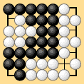
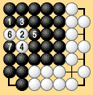
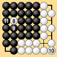

|
| It is only plain common sense that go is played on the principle of alternate moves, but when the thousand-year ko problem, the problem of connecting a final ko, the problem of reinforcing territory, the hane-seki problem or other problems that we have seen arise, the issue of whether alternate play is a right, a duty, or both a right and a duty becomes critical. An important related problem is defining the end of the game. You cannot just have one player declare that the game is over. If the right to move is a duty, then consider Dia. 2-25-1. By common sense Black should win this game, but what if White refuses to agree to end the game? |
|  | |
|
| If passing is not allowed, then play will continue as in Dias. 2-25-2 and 2-25-3, and if White demands that play still continue, Black will be wiped out. This is ridiculous, so naturally we had better let a player pass the right to move. Then there is the question of deciding whether, when a player passes, he has to pay a penalty. |
|  |  |
| Dia. 2-25-2 | Dia. 2-25-3 |
|---|
|
The definition of the end of the game is very unclear in the Japanese rules. When no problem position arises the end of the game is generally clear by common sense, but if a problem does arise, it can be unexpectedly hard to solve. The rules should make the game end automatically, instead of through a unilateral declaration or indication by one of the players. For example, you can have the game end when both players pass in succession.* This is also an important question in area rules, but it requires particularly close attention in territory rules. |
| * | The 1989 Japanese Rules of Go have the game stop at two consecutive passes, with provisions for resuming play if necessary. |